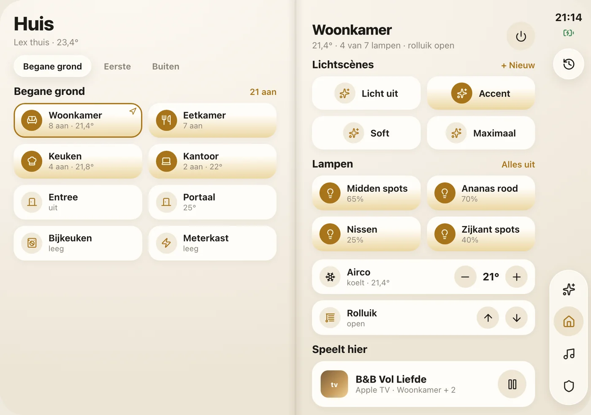
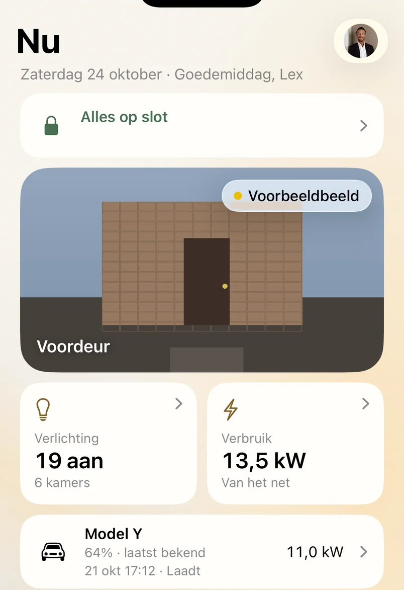
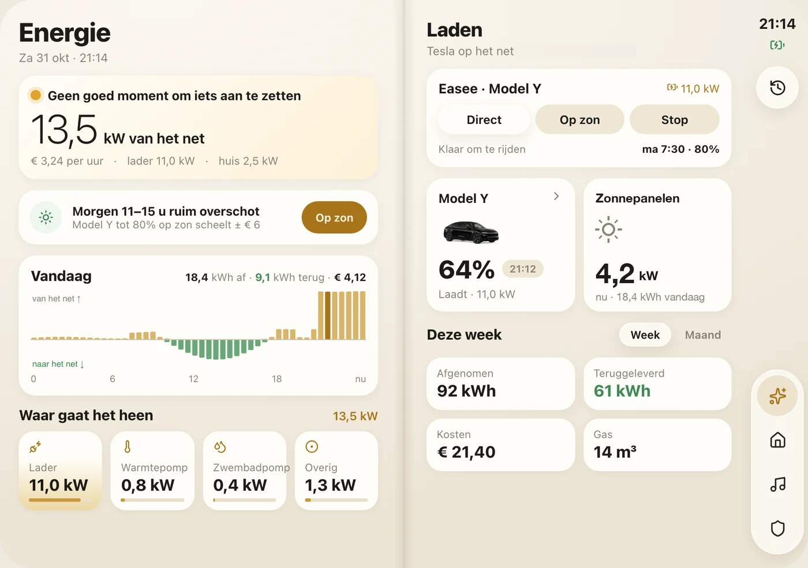

00 — MIJN ZIJPROJECT
A&L Living
Een eigen app waarmee we ons hele huis bedienen: licht, muziek, klimaat, energie en de voordeur. Op iPhone, iPad, Mac en Apple Watch. Gebouwd in mijn vrije tijd, puur uit interesse.
- 250+ versies gebouwd
- 4 soorten apparaten
- 0 te koop
Op deze pagina: waarom ik eraan begon, wat de app doet en hoe het werkt.


01 — WAAROM
Het bestond
nog niet.
Een paar jaar geleden was domotica nog lang niet zo ver als ik wilde, en dat vond ik vervelend. Ik wilde altijd al een huis dat je vanuit één plek bedient: licht, muziek, klimaat en de deur, zonder na te denken in welke app iets zit.
Dat bestond niet zoals ik het voor me zag. De systemen waren er wel, maar elk op zijn eigen eiland. Dus ben ik in mijn vrije tijd zelf gaan bouwen, en daar ben ik nooit meer mee gestopt.
Hier verdien ik niets aan. Ik bouw het omdat ik het leuk vind, en omdat we het thuis elke dag gebruiken.
Wat er was: elk systeem een eigen app
- Control4licht en panelen
- Huelampen
- UniFicamera’s en netwerk
- Teslaauto
- Easeelaadpaal
- Apple TVkijken
- Eén plekNiet meer zoeken in welke app iets zit
- SamenwerkenSystemen die op elkaar reageren
- Blijft groeienWat ontbreekt, bouw ik er zelf bij
02 — NU
Eén scherm
voor het hele huis.
Het eerste scherm laat zien wat er op dit moment speelt. Geen menu's doorlopen: wat je wilt weten staat er al, en wat je wilt doen is één tik weg.
Hetzelfde overzicht werkt op de iPad aan de muur, op de Mac en op de Apple Watch.
- Alles op slot. In één oogopslag zien of het huis dicht is.
- De voordeur. Wie aanbelt, zie je meteen in beeld.
- Licht en stroom. Hoeveel lampen er branden en wat het huis nu gebruikt.
- De auto. Acculading en laden, zonder aparte app.
03 — BEDIENING
Licht en muziek,
per kamer.
Elke kamer heeft zijn eigen scherm: lampen, lichtscènes, klimaat, rolluiken en wat er speelt. Loop je een kamer in, dan stelt de app die kamer vanzelf voor. Rechts kun je het zelf proberen: hoe zuinig houd jij dit huis?
- Lichtscènes
- Kamerherkenning
- Muziek in meerdere kamers
- Afstandsbediening voor de tv
- Klimaat en rolluiken
Het huis gebruikt 0,3 kW en de zon levert 2,0 kW.
04 — ENERGIE
Zuinig zijn begint
met zien.
We zijn economisch met energie, en daarom vonden we dit onderdeel belangrijk. De app laat zien wat het huis nu gebruikt, waar de stroom heen gaat en wanneer er zonnestroom over is.
- Stroom van dit moment. Van het net of terug, met de kosten per uur erbij.
- Vooruitkijken. De app meldt wanneer er morgen stroom over is.
- Laden op zon. De auto laadt op het moment dat het zin heeft.

05 — TECHNIEK
Eigen app,
op wat er al lag.
Geen kant-en-klaar pakket, maar één native SwiftUI-codebase met eigen targets voor iPhone, iPad, Mac en Apple Watch, plus widgets en Live Activities. De state loopt realtime via WebSocket en REST op Home Assistant, meldingen gaan via APNs, de kamerherkenning draait op bewegingsmelders en BLE-bakens en crashes komen binnen via MetricKit.
Dezelfde drang om zelf te bouwen zit ook in mijn bedrijven.